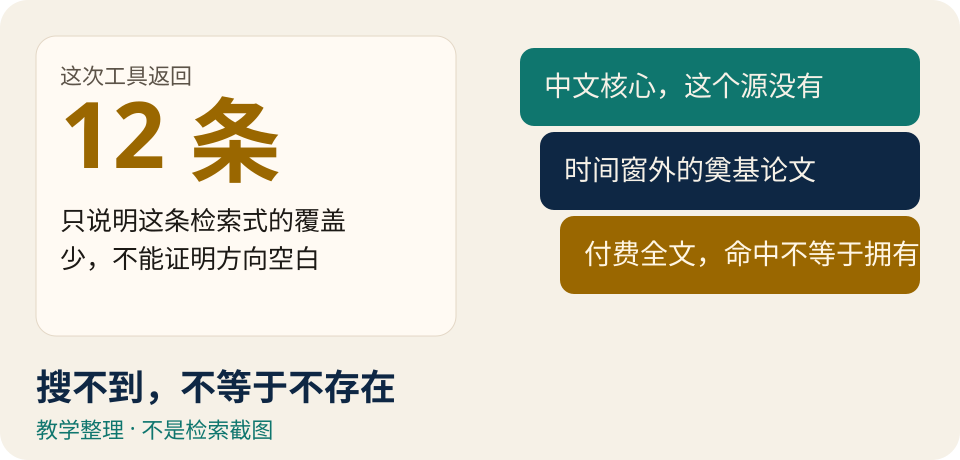
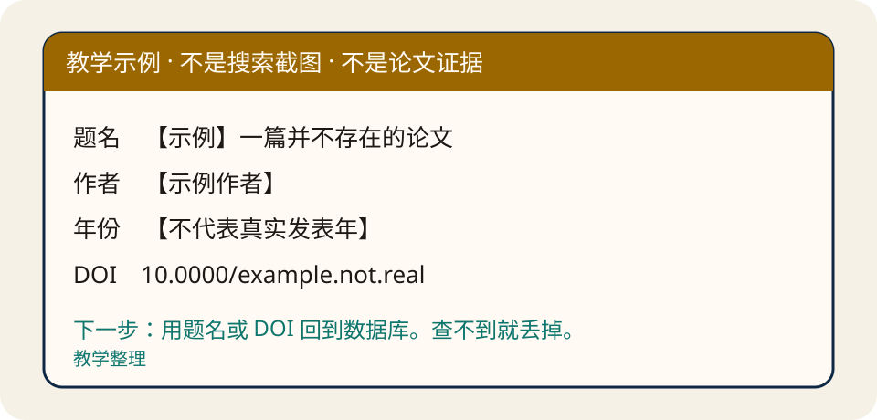
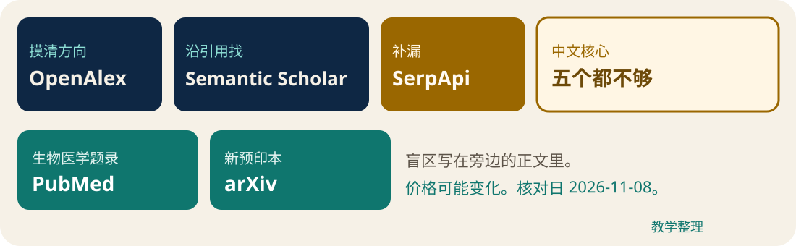
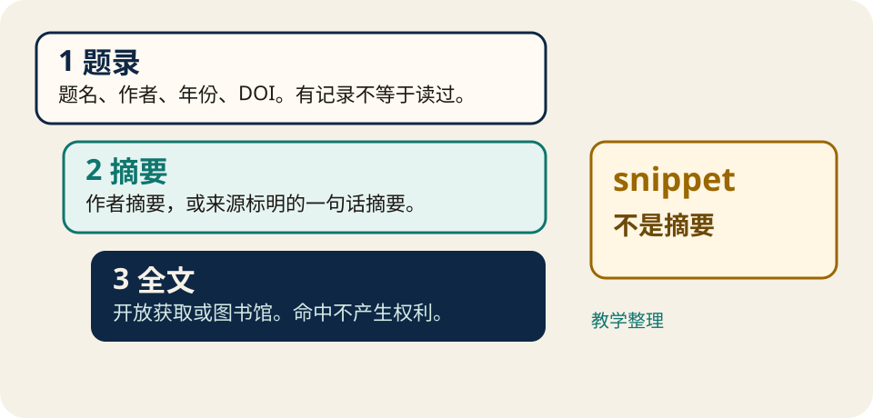
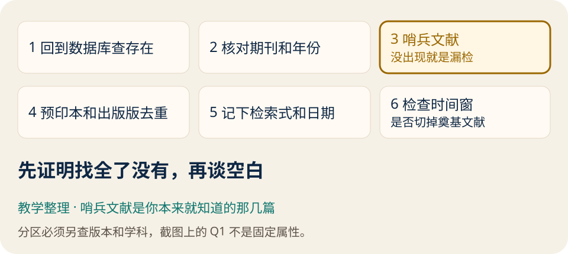

文献检索课 · 一套内容，两种看法
搜不到，不等于不存在
工具没覆盖到的论文，仍然放在数据库里。这节课教你分辨覆盖、选路线、读懂结果，并在公开场合不泄露密钥。

阅读页用暖白底。点「进入授课」后，同一批章节变成深蓝 16:9 大字，不另写一份讲稿。手机上先读，教室里再投屏。
来源作者兔老师，X @DrRabbitAI。原帖 2026-11-04 20:10 北京时间。本页是教学整理，不是原文全文。
学完能做的五件事
先会判断，再谈工具
- 看见「只有十几篇」时，先怀疑工具，不先宣布研究空白。
- 在两条路线里选一条：用现成的论文库 Agent，或自己接 API。
- 把五个作者演示当成提问样本，而不是已核对的文献目录。
- 按目标选一个主数据源，并说出它的盲区。
- 核验存在性和漏检；密钥不进网页、仓库和聊天。
文中三种标签不要混读：原文观点官方核对教学补充。收费和收录旁边都写着核对日 2026-11-08，数字以后会变。
核心误区
结果少，最危险的是错觉
这个方向的论文就这么几篇。
原文观点很多开源检索技能只连接少数免费来源，例如预印本平台，或用不带密钥的接口，搜几次就被限流。你看到十几篇，容易以为题目没人做。
教学补充开题时被问「这篇你怎么没看」，缺的常常是你本来就知道、却没被这次检索打中的哨兵文献。换源、改检索式、做漏检检查，比再写一段更华丽的提示词有用。
双路线
两条路都要在终点核验
教学整理 · 立体分支
汇合之后才谈空白
两条分支在这里相遇。搜不到，不等于不存在。下一步都是回到数据库核对，并用你已知的哨兵文献查漏。
图获得焦点时，左右方向键切换。授课翻页请把焦点放回底部工具条。
原文观点作者按自己的使用难度排列：已接入论文库的 YILA，第一次接 API 用 Grok Bot，习惯本地 Agent 再用 Codex 或 WorkBuddy。YILA 当时接入了 Google Scholar、Semantic Scholar、arXiv 和 Google 专利。这是作者当时的说法。
待核验当前产品是否仍然接入这些库、按钮长什么样、几分钟能不能做出网页，本课都没有复测。界面会变。
本地规则 · 不是模型推荐
先回答你愿不愿意管密钥
| 规则 | 你的情况 | 路线 | 作者演示里的工具 |
|---|---|---|---|
| T-agent | 不想配置 | 已接入论文库的 Agent | YILA |
| T-grok | 第一次接 API | 自己接 API | Grok Bot |
| T-local | 本地 Agent | 自己接 API | Codex 或 WorkBuddy |
五个案例 · 作者演示 · 未独立复现
看提问，不把结果当结论

10.0000/example.not.real 是故意无效的示例。真实论文名只出现在「作者当时写过、本课没打开」的名单里，不放进伪造的结果页。案例 01 · 作者演示 · 未独立复现
立项依据：先听边界
教学补充这个案例要练的判断是：去重后的候选池，加上「哪些文献不能直接拿来支撑中国议题」，比塞满相关标题更有用。
我在申报一个省社科课题，题目是「人工智能赋能高校思政课实践教学的机制研究」。请按现状、影响机制、实践路径检索文献，用来写立项依据。
原文观点作者称工具查了万方、OpenAlex 和 Google Scholar，去重后留下 57 篇，并提醒英文文献里直接研究中国思政课的很少，适合当作国际参照。57 这个数字不是本课的调查结果。
你该核对：抽几条回数据库查存在；英文文献是否真的只适合做参照；Excel 候选池有没有把预印本和出版版算成两篇。
案例 02 · 作者演示 · 未独立复现
实证表上的分区会过期
教学补充要练的判断是：截图里的 JCR 分区必须另注版本和学科，不能写成那篇论文的固定属性。
检索关于「短视频使用与大学生睡眠质量」的中英文实证研究，中英文分开列，优先高质量期刊。
原文观点作者称结果分成中英文两表，并提醒现有研究多讲成瘾或问题性使用，而不是普通使用时长。作者还写过 Frontiers in Psychology 为 Q1、Acta Psychologica 为 Q2。
案例 03 · 作者演示 · 未独立复现
时间窗会把奠基试验留在外面
教学补充要练的判断是：相对时间「近 5 年」会切掉更早、但仍然是基础的试验。临床检索结果不是诊疗建议。
查找 SGLT2 抑制剂治疗心力衰竭的研究，优先随机对照试验、系统综述和指南。
原文观点作者点名 DELIVER、EMPULSE、一份 ESC 指南更新，并提醒 DAPA-HF、EMPEROR 落在他使用的五年窗之外。这些年份和分区，本课没有逐篇打开。
你该核对：时间窗是否适合这个临床问题；指南是不是你要的版本；任何一条都要回到 PubMed 或出版社，而不是停在聊天记录里。
案例 04 · 作者演示 · 未独立复现
新方向先要一条阅读路径
教学补充要练的判断是：概念奠基、一条理论线索、再加近期研究，比一份长书单更容易进门。「如果只读三篇」是教学策略，篇目仍要核对是否存在。
刚转到公共管理，想了解「社区韧性」。先给奠基文献，再补近几年的研究。
原文观点作者给出的路径是概念奠基、社会资本与协同治理、中国情境，并点名 Norris 等人和 Aldrich 与 Meyer。原文里的 2007、2014 等年份，本课没有独立核对。
案例 05 · 作者演示 · 未独立复现
专利名单不是法律意见
教学补充要练的判断是：「值得跟踪的申请人」不是按件数排名。同族没核全。这不能当作侵权风险判断（FTO），也不构成法律意见。
检索钙钛矿太阳能电池封装的专利，按技术路线整理，并说明每类解决什么问题。
原文观点作者称结果分成 9 条技术路线，并列出一批申请人。其中把宁德时代放在「国外」。这条地域分类值得复核，本课不把它写成事实。9 条路线和机构名单都未独立复现。
五个数据源
一个问题，一个主源

教学整理 · 分工，不是互引
OpenAlex · 摸清方向
分工是摸清一个方向、做筛选。节点一样大，因为这张图不表示收录数量，也不是论文互相引用。它覆盖不了中文核心。
- OpenAlex：摸清方向、做筛选。盲区是中文核心，语义搜索更贵更慢。
- Semantic Scholar：已有核心论文，沿引用链找。无密钥是共享池，不是你个人的 1000 次每秒。
- SerpApi：补 Google Scholar 那一类结果。它是第三方。snippet 不是摘要。
- PubMed：生物医学题录和摘要。它本身不是全文库。
- arXiv：物理、数学、计算机等预印本。全文可读，不等于可以转载。
本地规则 R-overview 到 R-preprint
选数据源，不叫模型替你选
预算只改变提醒，不改变主源。中文核心会标成「五个来源不够」，主源仍作补充。知网、万方是原文建议的去处，本课不核对其收录量。
官方核对 · 2026-11-08 · 可能变化
OpenAlex 的 1 美元不是网站点击
- 每账户每天 1 美元免费额度，UTC 零点重置，也就是北京时间 08:00。
- 单篇查询免费。筛选约 0.0001 美元一次，基础搜索约 0.001 美元一次，下载 PDF 约 0.01 美元一次。
- 1 美元约 1000 次基础 API 搜索，不等于在网站上点 1000 下。rerank 搜索约 500 次。
- 按单价心算，不是账单：20 次基础搜索 + 200 次筛选 + 50 次单篇 = 0.04 美元。
- 新免费账户的第一美元，花费上限是每 5 分钟 0.10 美元。2026-11-03 之前的账户不适用。这不是注册后干等就自动解除。
官方核对一般限速：无 key 10 RPS，免费 key 30 RPS，语义搜索 1 RPS。10 和 30 不覆盖所有重型查询。每页最多 100 条。
待核验原文写过不带 key 时日额度只剩十分之一。限速页这次没有这句话，不当成事实。
官方核对 · 可能变化
其余四个源，各有一条硬边界
- 语料：核心作品 3 亿多。截至 2026 年 9 月，默认约 3.27 亿，
corpus=all约 4.76 亿。作品不等于期刊论文。全文缓存是 7000 多万篇开放获取 PDF，另有 TEI。原文的 6000 多万已与现文档不同。元数据 CC0 不等于 PDF 可自由转载。 - Semantic Scholar：介绍页写 2.14 亿篇、24.9 亿条引用、7900 万作者，不是实时总数。无密钥用户共享每秒 1000 次。有 key 的入门限速是 1 RPS。摘要因版权缺失、关键词最多 1000 条，本次未核到端点文档，待核验。TLDR 只算原文观点。
- SerpApi：免费档 0 美元、每月 250 次成功检索、每小时 50 次。入门档每月 25 美元、1000 次、每小时 200 次。第三方，不是 Google 官方 API。失败和缓存不计次。原文「没用完就清零」不能扩大到所有余额。
- PubMed：4000 多万条题录和摘要，不含期刊全文。E-utilities 限速这次没核成，不写死数字。
- arXiv：至少 3 秒一次、同一时间一个连接。转载要版权人许可。
待核验原文里的 1.7 亿摘要、1.3 亿开放获取、590 万中文，本次没有独立计数。language 字段不能当成中文核心覆盖率。
来源：OpenAlex 全文说明、Semantic Scholar API、SerpApi 定价、Scholar 字段、PubMed 简介、arXiv 条款。
信息不是全文
题录、摘要、全文分开拿

教学整理 · 三层厚度
1 · 题录
题名、作者、年份、出处、DOI。有一条题录，只说明工具返回了这条记录，不等于你读过论文。
num 是 1 到 20，默认 10。示例里的 snippet 是结果页片段。Google Scholar 帮助页写明：多数摘要免费，阅读全文可能需要订阅。snippet 在立体图里不与摘要相连。官方核对第三方 API 不授予付费全文的访问权或转载权。arXiv 上能打开 PDF，也不等于可以把文件再镜像出去。
接入与安全
密钥不进公开网页
- API key 能花掉你的额度。不要写进 HTML、仓库、截图或聊天记录。
- 工具若有专门的密钥框，就用那个框。作者描述 Grok Bot 会这样保存，并称 Bot 本身看不到。那是原文观点，界面可能已变。
- 没有密钥框时，写入项目里的
.env，变量名用占位符OPENALEX_API_KEY，并要求 Agent 不要打开、打印或复述这个文件。 - Codex 演示里出现过「你把 key 发来」。本课改写这条：不要粘进对话。
- WorkBuddy 在作者课上与 Codex 同类：文档交给它，密钥放本地。本课没有复测。
文档入口：OpenAlex、Semantic Scholar、PubMed E-utilities、arXiv API。PubMed 限速页这次没有核成，链接只供你自己查。
检索之后
用哨兵文献检查漏检

教学整理 · 六级台阶
3 · 哨兵文献
把你本来就知道的重要论文当作哨兵。它们没出现，说明这条检索不完整，不是这个方向没有文献。这一级被抬高，因为最容易被忽略。
- 抽几条，用 DOI 或题名回到数据库。
- 期刊和年份另核。分区要写版本和学科。
- 哨兵文献缺失，就扩大来源或改检索式。
- 预印本、出版版、机构库版本要去重。
- 记下检索式、数据源和绝对日期。作者示例里的「近 5 年」只留在历史演示。
- 问一句：时间窗是否切掉了奠基文献。
拿去改的模板
练习必须写绝对日期
复制成功会显示：已复制到剪贴板。内容只留在你的设备上。复制失败会显示：复制失败。文字已选中，请使用 Ctrl+C 或长按复制。密钥不会被上传。
教学补充下面这份要求主题、中英文同义词、文献类型、起止日期、点名的数据源和纳排标准。无法确认就写「未确认」，不要编造 DOI。
请检索文献，并只依据检索结果回答。无法确认的字段写“未确认”，不要编造 DOI、作者或期刊分区。 主题：【填写】 中文同义词：【填写】 英文同义词：【填写】 文献类型：【期刊论文 / 预印本 / 综述 / 指南 / 专利】 起始日期：【YYYY-MM-DD】 截止日期：【YYYY-MM-DD】 数据源：【从 OpenAlex、Semantic Scholar、SerpApi、PubMed、arXiv 里点名；中文核心另说明知网或万方】 纳入标准：【填写】 排除标准：【填写】 对每条结果输出：题名、作者、年份、来源、DOI、你用来定位证据的原句位置、开放获取链接或“未见合法全文链接”。 最后列出：检索式、检索日期、可能的漏检（时间窗之外的奠基文献、中文核心、付费全文）。
历史演示 · 保留原文的「近 5 年」
作者原话只作对照
投影上不铺开五段长提示词。阅读和打印能看到全文。过几年再读，「近 5 年」的边界会变。
【历史演示】下面五段是作者原提示词，保留「近 5 年」。过几年再读，「近 5 年」的边界会变。你自己的练习用教学模板，填写绝对日期。 场景一，立项依据： 我在申报一个省社科课题，题目是"人工智能赋能高校思政课实践教学的机制研究"。请按"现状、影响机制、实践路径"三个研究内容，分别检索近 5 年中英文代表性文献，用来写立项依据。 场景二，中英文实证： 帮我检索近 5 年关于"短视频使用与大学生睡眠质量"的中英文实证研究，中文和英文各列出代表性文献，优先高质量期刊。 场景三，临床进展： 查找近 5 年 SGLT2 抑制剂治疗心力衰竭的研究进展，优先随机对照试验、系统综述和指南，按"疗效、安全性、适用人群"分类整理。 场景四，经典文献： 我是刚转到公共管理方向的研究生，想了解"社区韧性"这个概念。请先给我奠基性的经典文献，再补近几年的代表性研究，帮我建立这个领域的基本脉络。 场景五，专利： 我在做钙钛矿太阳能电池封装方向的研究，想了解这项技术的专利布局。请检索近 5 年中国和全球的相关专利，按技术路线分类整理，列出主要申请人，并说明每类专利主要解决什么问题。
我想让你通过 OpenAlex API 帮我检索论文。 API 文档：https://developers.openalex.org 我的 API key 已经放在当前文件夹的 .env 文件里，变量名是 OPENALEX_API_KEY。 请写一个检索脚本，从环境变量读取 key。不要打开、打印或在回复中显示这个 key。 写好后，用“【你的关键词】”测试一次，返回前 20 篇论文的： 标题、作者、年份、期刊、被引次数和 DOI。
解释性自测 · 成绩不上传
四题，可以改选再试
来源、版权、没核验的部分
本页不冒充授权转载
原文作者是兔老师（X @DrRabbitAI）。原帖见下方链接。链接和署名不是转载许可。公开页没有收录原文全文，也没有原帖图片和课堂照片。图是本课绘制的教学整理。
官方文档以 2026-11-08（Asia/Shanghai）核对。价格、收录和限速可能变化。五个案例的篇数、样本量、分区、论文年份、9 条专利路线和申请人地域，都不是独立结论。